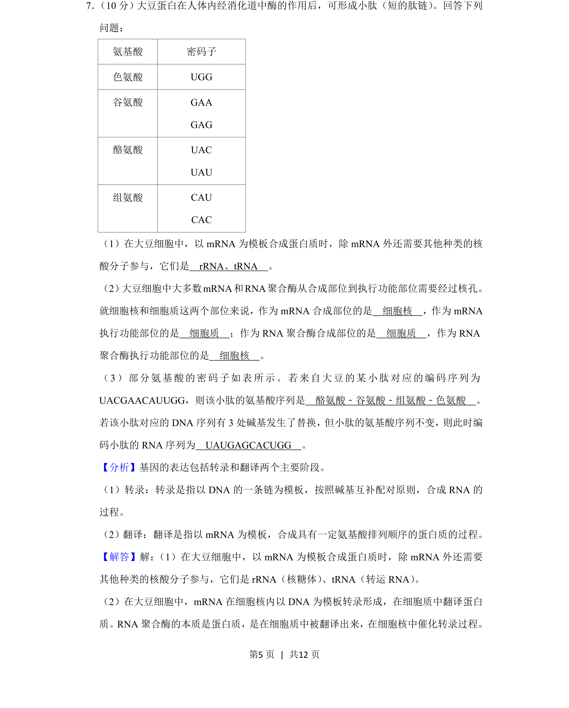
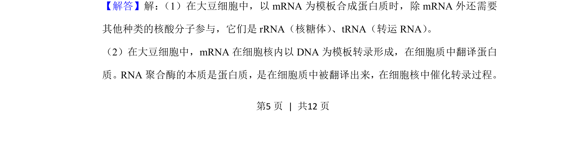
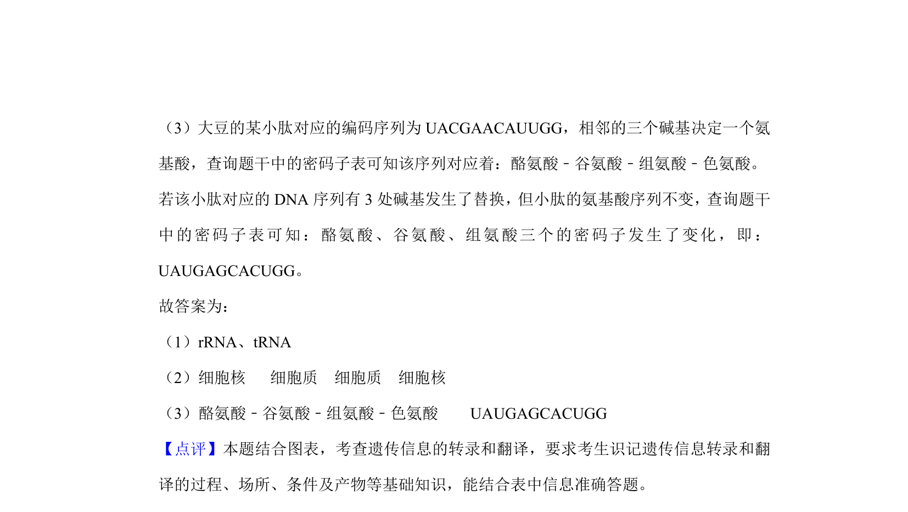

考点：转录 翻译 密码子 基因表达

本题以大豆蛋白为背景，考查基因表达中转录、翻译过程及密码子应用。


📄 原 PDF 第 5 页：
素材/真题/吉林/2008-2024·（吉林）生物高考真题/2020年高考生物试卷（新课标Ⅱ）（解析卷）.pdf
7． （10分）大豆蛋白在人体内经消化道中酶的作用后，可形成小肽（短的肽链） 。回答下列 问题： 氨基酸 密码子 色氨酸 UGG 谷氨酸 GAA GAG 酪氨酸 UAC UAU 组氨酸 CAU CAC （1）在大豆细胞中，以mRNA为模板合成蛋白质时，除mRNA外还需要其他种类的核 酸分子参与，它们是 rRNA、tRNA 。 （2） 大豆细胞中大多数mRNA和RNA聚合酶从合成部位到执行功能部位需要经过核孔。 就细胞核和细胞质这两个部位来说，作为mRNA合成部位的是 细胞核 ，作为mRNA 执行功能部位的是 细胞质 ；作为RNA聚合酶合成部位的是 细胞质 ，作为RNA 聚合酶执行功能部位的是 细胞核 。 （3）部分氨基酸的密码子如表所示。若来自大豆的某小肽对应的编码序列为 UACGAACAUUGG，则该小肽的氨基酸序列是 酪氨酸﹣谷氨酸﹣组氨酸﹣色氨酸 。 若该小肽对应的DNA序列有3处碱基发生了替换，但小肽的氨基酸序列不变，则此时编 码小肽的RNA序列为 UAUGAGCACUGG 。
【分析】基因的表达包括转录和翻译两个主要阶段。 （1）转录：转录是指以DNA的一条链为模板，按照碱基互补配对原则，合成RNA的 过程。 （2）翻译：翻译是指以mRNA为模板，合成具有一定氨基酸排列顺序的蛋白质的过程。 【解答】解： （1）在大豆细胞中，以mRNA为模板合成蛋白质时，除mRNA外还需要 其他种类的核酸分子参与，它们是rRNA（核糖体） 、tRNA（转运RNA） 。 （2）在大豆细胞中，mRNA在细胞核内以DNA为模板转录形成，在细胞质中翻译蛋白 质。RNA聚合酶的本质是蛋白质，是在细胞质中被翻译出来，在细胞核中催化转录过程。